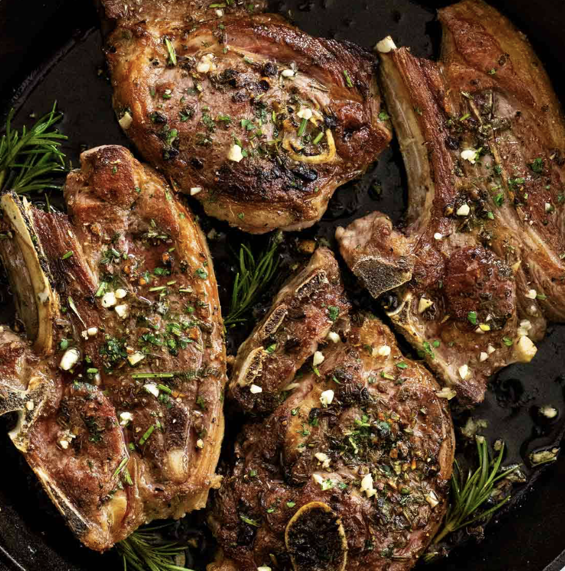

Lamb Steak

Ingredients
- 2 lamb steaks
- 1 teaspoon Diamond Crystal kosher salt
- ¼ teaspoon black pepper
- ¼ teaspoon ground cumin
Instructions
- Heat a well-seasoned, large cast-iron skillet over high heat until smoking, about 5 minutes.
- Season the steaks with kosher salt, black pepper, and ground cumin.
- Add the steaks to the hot skillet. Cook until a brown crust forms on the bottom, about 2 minutes.
- Flip the steaks and cook them for 2 more minutes on the second side.
- Finish by cooking the strips of fat on the edges of the steaks, about 30 seconds for each edge.
- Transfer the steaks to plates, loosely cover them with foil, and allow them to rest for 5 minutes before serving.
- Enjoy!